Infantil sem parecer amador
Painel de referências pra revisão visual do site da LCR. Capturas reais de 19 sites (out/2026), o que cada um ensina, o diagnóstico do nosso site hoje e a direção proposta. Nada aqui é pra copiar; é pra decidir a régua.
0. Comparação: direção A ou direção B?
Mesma estrutura, mesmos textos, mesmas fotos reais da clínica. A única diferença é o tom visual. Os dois são páginas de verdade, abra e role: abrir mockup A · abrir mockup B. A nota do Google é exemplo, ainda não temos o número.
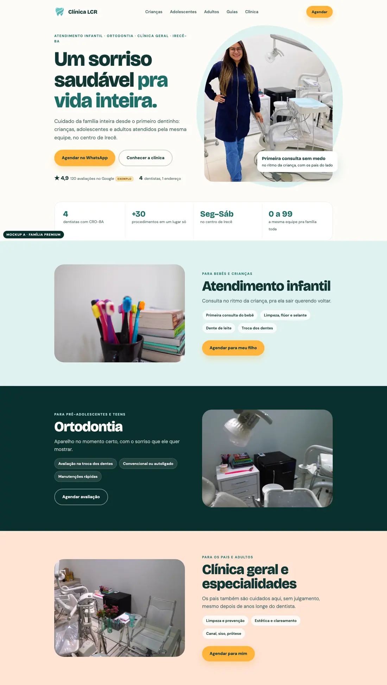
A · Família premium
Foto real, blocos de cor, tipografia grande. Zero personagem.
- Lúdico só pela forma e pela cor: arco na foto, blob aqua, faixas creme / aqua / verde-noite / pêssego.
- Fala com o pai e com o adulto que paga prótese e clareamento. Não parece "clínica de criança".
- Régua: Coconut Smiles, Happy Tooth, Zen Dental.
- Risco: ficar parecido com qualquer clínica bonita. A diferença da LCR tem que vir das fotos e dos textos.
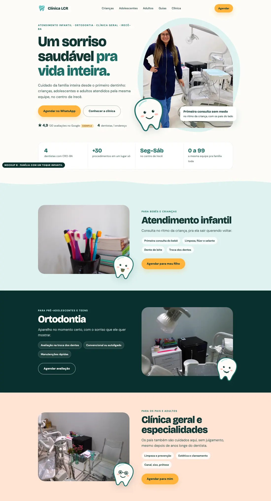
B · Família com um toque infantil
Tudo da A, mais um personagem-dente em 4 pontos da página.
- Um único personagem, derivado do dente do logo, em 3 versões: bebê com chupeta, teen com aparelho, adulto de óculos. Nunca em todo card.
- Diz "aqui criança é bem-vinda" sem virar livro infantil. O adulto continua se reconhecendo no bloco dele.
- Régua: Rock Pediatric, só que com um personagem em vez de vinte.
- Risco: se a Dra. Lara não gostar do personagem, a página inteira cai com ele. Por isso é um só, e sai em 10 minutos se precisar.
Como apresentar
- Mostrar a A primeiro, inteira. É a que ela tende a aceitar e já resolve o "parece amador".
- Depois a B como "a mesma página com um detalhe a mais". A decisão vira sobre um detalhe, não sobre a identidade da clínica.
- Perguntar o motivo da resistência: medo de parecer "só infantil", gosto pessoal, ou receio de prometer odontopediatria sem a especialidade. A arquitetura já responde aos três: três públicos, equipe com as quatro áreas, "atendimento infantil" em vez de "odontopediatria".
- O que não está em discussão: fotos reais, blocos de cor, tipografia grande e fim dos ícones genéricos. Isso é o que tira o site do nível template nas duas direções.
1. A régua: o que separa "infantil premium" de "infantil amador"
Premium (todas as boas referências fazem)
- Um só sistema de ilustração, feito pra marca, com traço e paleta únicos. A graça vem de 1 ou 2 personagens bem desenhados, não de 20 clip-arts.
- Paleta curta: 1 cor de marca, 1 acento quente, 2 neutros. Pastel só em superfície; texto sempre escuro e crisp.
- Tipografia grande e editorial: títulos em 56–80px, muito respiro, poucas palavras por tela.
- Foto real como prova: dentista, equipe, espaço, mãe com criança. A ilustração decora; a foto convence.
- Blocos de cor por seção (creme, aqua, verde-noite, areia) em vez de tudo branco com cards iguais.
- Formas orgânicas com moderação: um blob atrás da foto, uma onda entre seções. Não em todo card.
- Conversão explícita: nota do Google ao lado do CTA, como funciona a 1ª consulta com passos, preço/condições explicados, CTA em todo bloco.
Amador (o que faz o site parecer template)
- Ícones de linha genéricos dentro de quadradinhos coloridos, repetidos em todas as seções.
- Cards iguais em grade, seção após seção, com a mesma "pílula" de título em cima.
- Arco-íris, castelo, fada do dente, mascote fofinho demais: fala só com a criança e assusta o pai (ver Fábula abaixo).
- Muitas cores vivas competindo (Kidz & Teen abaixo: 6 cores saturadas na mesma dobra).
- Foto de banco, foto distorcida de grande-angular, foto escura com véu verde.
- Texto demais por bloco; o site vira folheto.
- Efeitos "wow" (intro animada, parallax) que atrasam o conteúdo em vez de servir a ele.
2. Referências que mais servem pra LCR
Ordem de relevância. Cada card diz o que aproveitar (lógica e estrutura) e o que evitar.
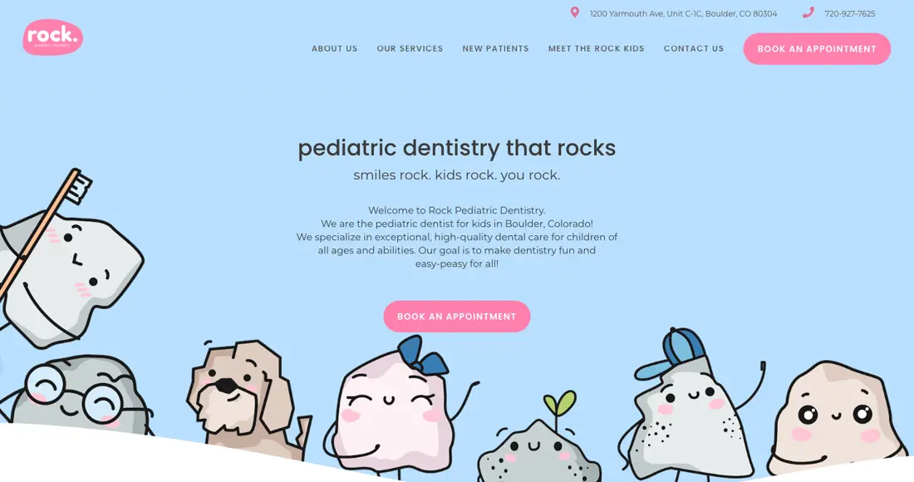
Ilustração própria · Rock Pediatric (Boulder)
Personagens com a cara da marca, não clip-art
- Dentes-personagem com traço fino, 3 cores pastel e muito branco: infantil e sofisticado ao mesmo tempo.
- Hero quase vazio: título pequeno, 1 CTA, personagens na borda inferior. Nada compete com o botão.
- Pra LCR: criar uma família de 3 personagens a partir do dente do logo (bebê, teen, adulto). O logo já é um dente: vira sistema.
rockpediatricdentistry.com 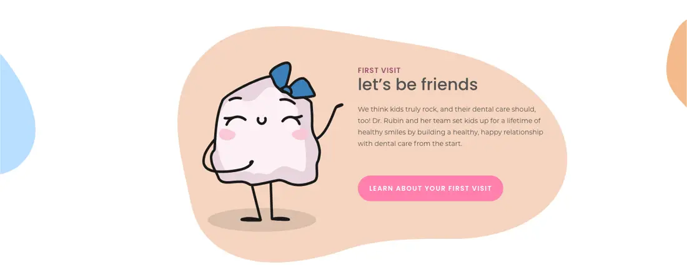
Seção · Rock Pediatric
Blob + personagem + texto curto + 1 botão
- Uma seção = uma forma orgânica, um personagem, 3 linhas, um CTA. É o padrão que substitui "grade de 4 cards".
- Pra LCR: usar nesse formato a Primeira consulta e os 3 públicos (um bloco por público, alternando lados).
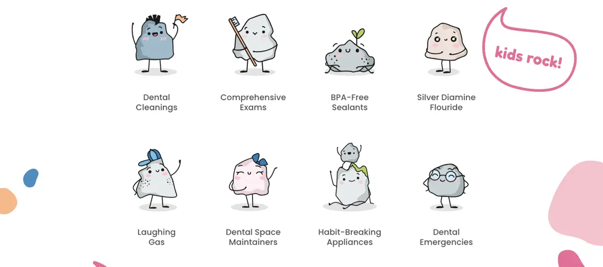
Serviços · Rock Pediatric
Serviços como personagens, sem caixinha
- Cada serviço é o mesmo personagem com um objeto (escova, selante, balão). Sem ícone de linha, sem card.
- Pra LCR: as 8 especialidades viram 8 variações do dente-personagem. Resolve o "ícone genérico em quadrado".
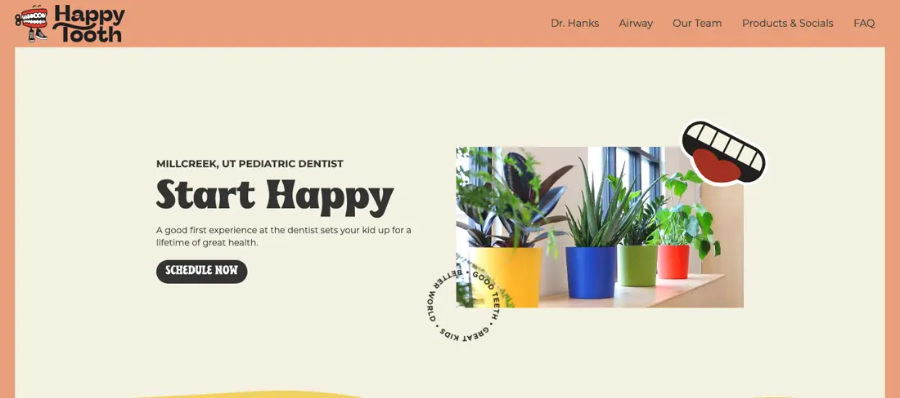
Direção de arte · Happy Tooth (Utah)
Retrô, blocos de cor, adesivo de logo, foto real
- Paleta de 4 cores quentes, cada seção com fundo próprio, tipografia display pesada. Lúdico pelo adulto, não pela criança.
- Hero com foto de objeto (vasos) em vez de cadeira de dentista: sensação de loja bonita, não de clínica.
- Pra LCR: blocos de cor por seção com a nossa paleta (creme, aqua claro, verde-noite, sol). Hoje tudo é branco.
happytoothslc.com 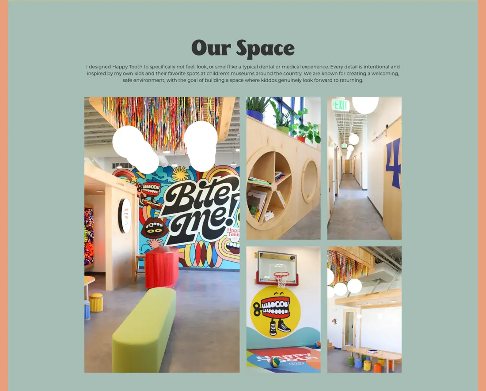
Espaço · Happy Tooth
"Our Space": galeria em mosaico com texto curto
- Uma foto grande + 4 menores, legenda de 3 linhas dizendo por que o espaço foi pensado assim.
- Pra LCR: nossa galeria já existe; falta o mosaico assimétrico e a frase da Dra. Lara sobre o espaço.
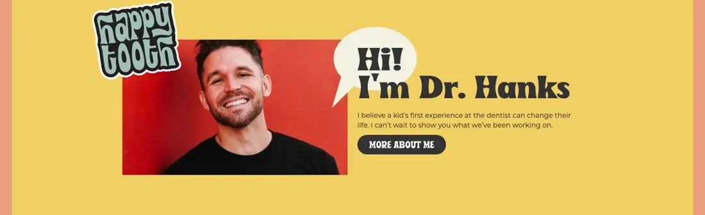
Equipe · Happy Tooth
"Oi, eu sou o Dr. Hanks" com balão de fala
- Foto real com fundo colorido, frase em primeira pessoa, 1 botão. Humaniza em 3 segundos.
- Pra LCR: a Dra. Lara em destaque assim, no topo da seção de equipe, com a frase dela.
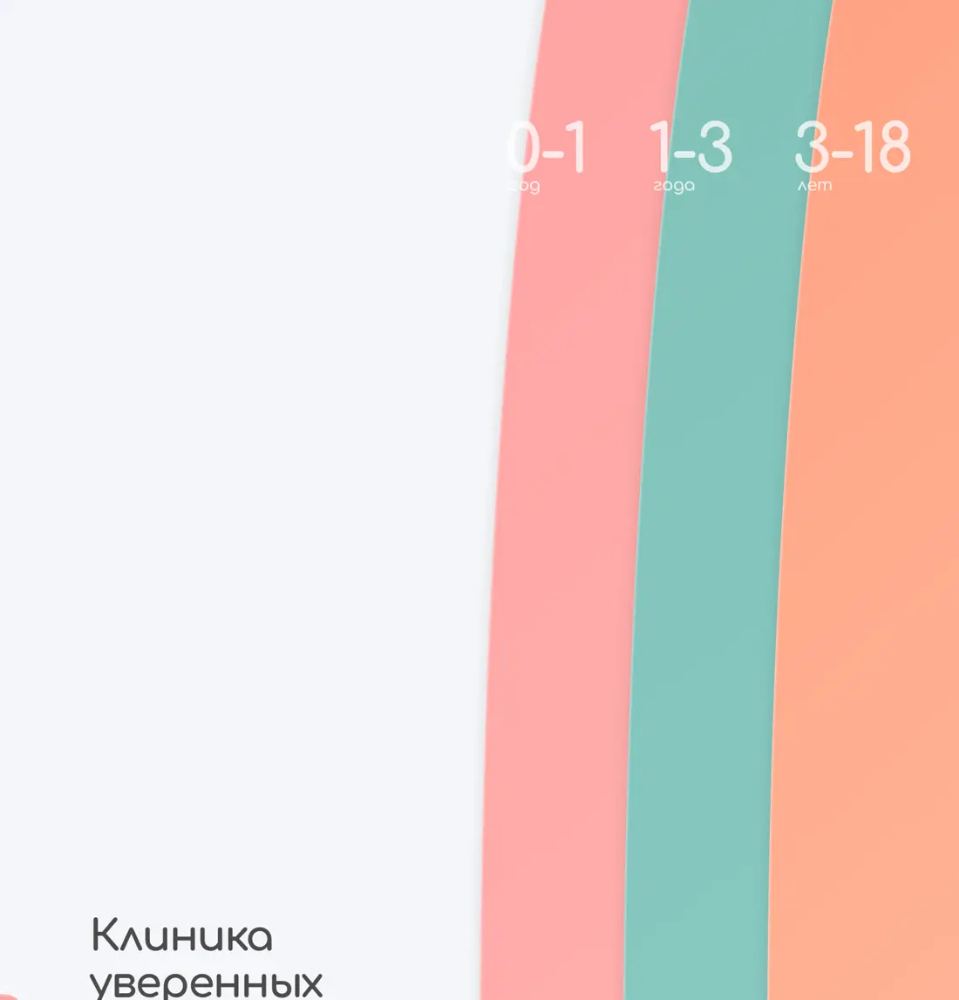
Segmentação por idade · Persona Kids (Awwwards)
Idades como arcos gigantes de cor
- 0–1, 1–3, 3–18 viram três arcos coloridos com personagem 3D. Zero texto e o pai já sabe onde clicar.
- Pra LCR: a Linha do tempo (0–2, 3–5, 6–9, 10–17, 18+) pode ganhar esse peso visual: faixas de cor com o personagem crescendo.
persona-detstvo.ru 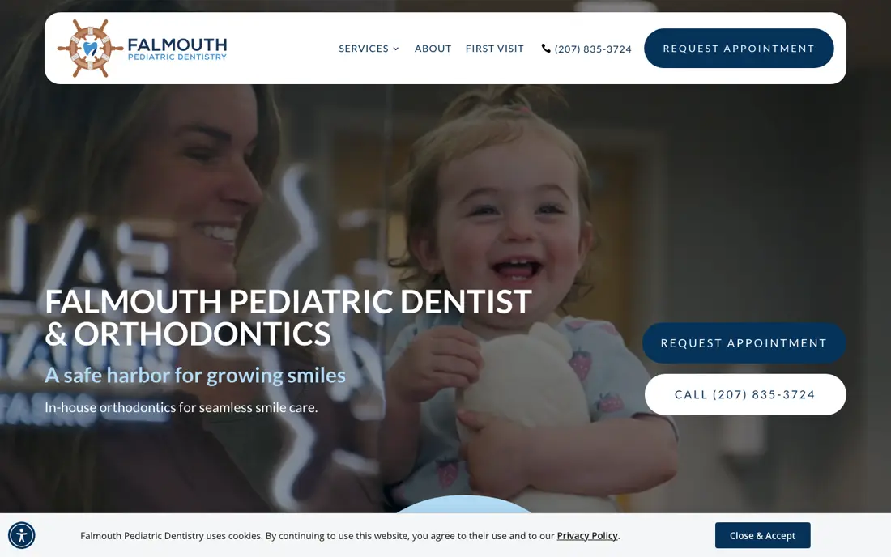
Hero com foto real · Falmouth Pediatric
Mãe + bebê rindo, título claro, 2 CTAs
- Foto real de família ocupa a tela; headline de posicionamento ("um porto seguro"); CTA primário e telefone.
- Pra LCR: é o hero que converte. Depende de foto com criança autorizada pelos pais. Enquanto não houver, usar a Dra. Lara no consultório (ver El Segundo).
falmouthpediatricdentistry.com 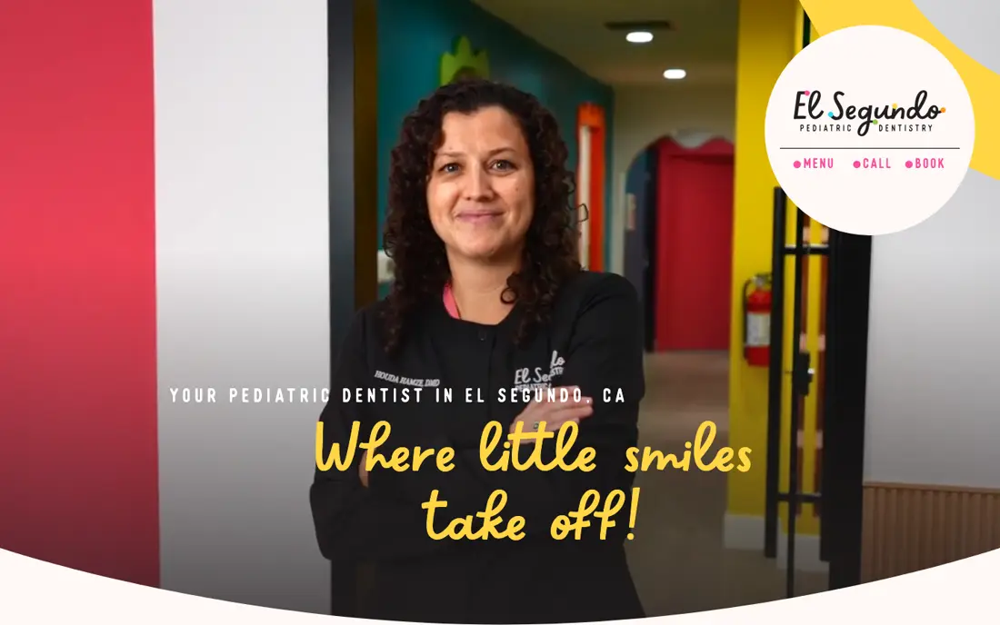
Hero com a doutora · El Segundo Pediatric
Dentista real no corredor colorido + título manuscrito
- Não precisa de criança na foto: a dentista sorrindo no espaço real, com uma linha manuscrita, já é infantil e confiável.
- Pra LCR: plano B do hero, factível já com a Dra. Lara. A fonte manuscrita só no título, nunca no corpo.
elsegundopediatricdentistry.com 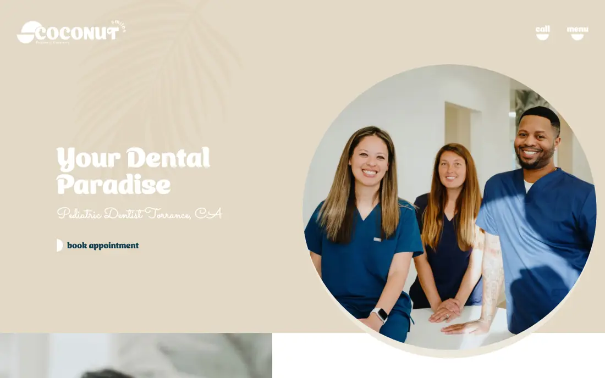
Paleta neutra + 1 cor · Coconut Smiles
Areia, azul-marinho, foto da equipe em círculo
- Dois neutros e uma cor forte. A foto da equipe em máscara circular com fundo bege é o elemento lúdico. Nada mais.
- Pra LCR: prova de que "infantil" pode ser só forma + cor, sem desenho. Máscara arredondada nas fotos de equipe.
coconutsmilespediatricdentistry.com 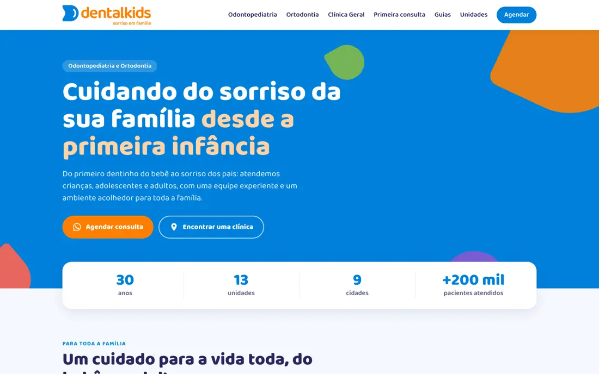
Arquitetura de conversão · Dentalkids (a referência do briefing)
Prova logo abaixo do hero, 3 públicos, idades, guias
- Estrutura que já seguimos. Visualmente: azul chapado, blobs laranja/verde, ilustrações de IA nos guias (ponto fraco: parecem genéricas).
- Pra LCR: manter a arquitetura, superar o visual: fotos reais no lugar das ilustrações de IA e personagem próprio.
dentalkids.com.br 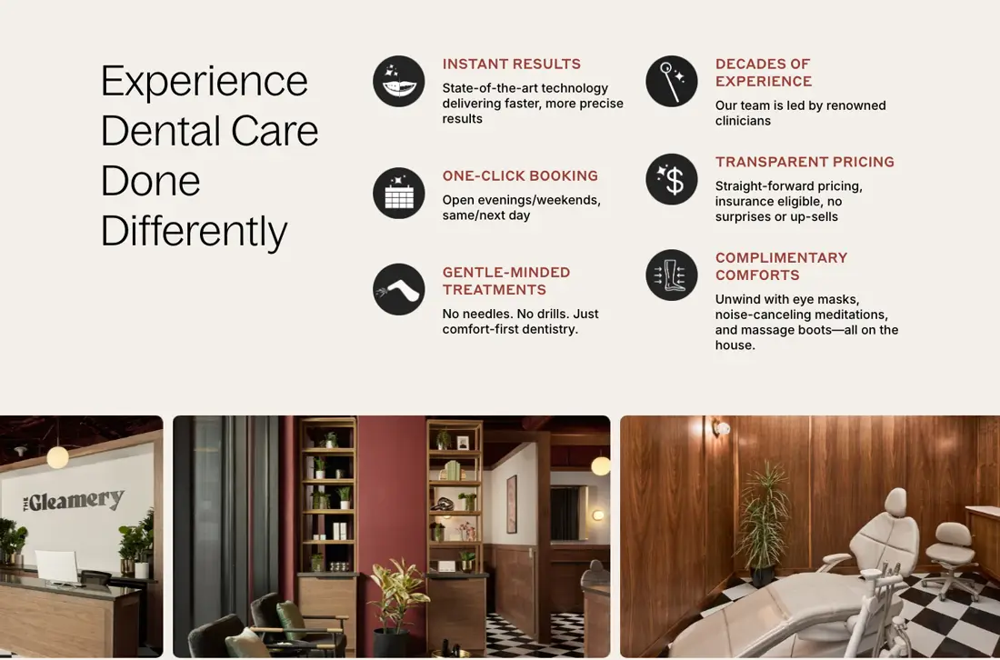
Conversão adulto · The Gleamery (LA)
Diferenciais em 6 linhas + faixa de fotos do espaço
- Título gigante à esquerda, 6 diferenciais com ícone único e 2 linhas cada, e logo abaixo 3 fotos do espaço. Simples e caro.
- Pra LCR: molde pra seção "Por que as famílias ficam" (hoje 4 cards escuros iguais).
thegleamery.com 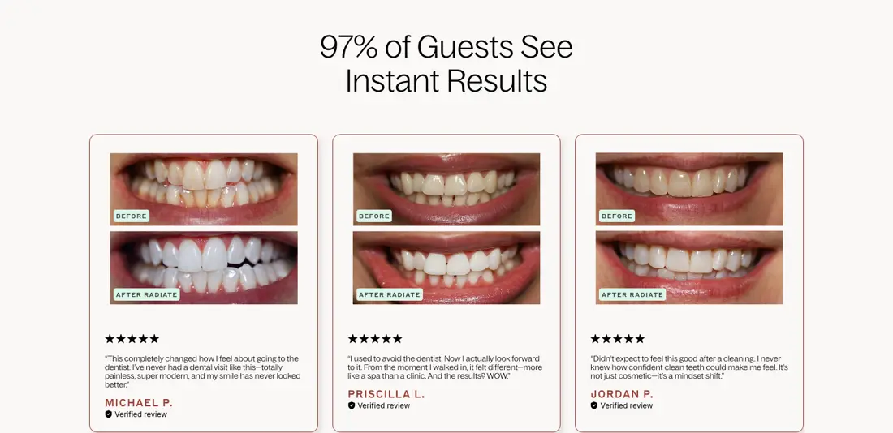
Prova social · The Gleamery
Número grande + depoimentos verificados
- "97% dos clientes…" + 3 cards com estrelas, trecho e "verified review". A prova é visual, não um bloco de texto.
- Pra LCR: formato da seção de depoimentos quando as avaliações do Google chegarem. Sem antes e depois (CFO).
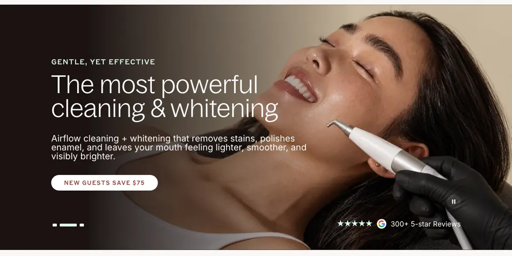
Hero adulto · The Gleamery
Nota do Google ao lado do CTA
- "★★★★★ 300+ 5-star reviews" dentro do hero, no canto do botão. É a prova no lugar onde a decisão acontece.
- Pra LCR: a faixa de prova pode subir pra dentro do hero quando tivermos a nota.
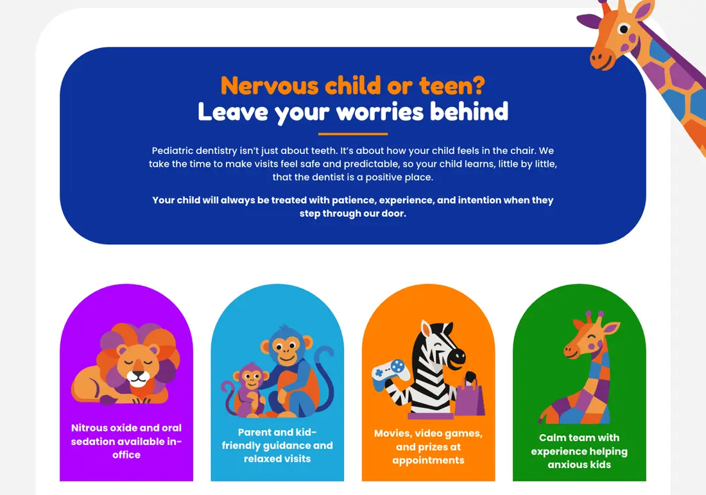
Conteúdo certo, visual errado · Kidz & Teen (Texas)
"Criança ou adolescente com medo? Deixa com a gente"
- O bloco de ansiedade (sedação, orientação aos pais, filmes e prêmios, equipe calma) é exatamente a pergunta nº 1 do pai.
- Evitar 6 cores saturadas, cartoons de banco, fundo azul-royal: é o que faz parecer amador.
kidzandteendental.com 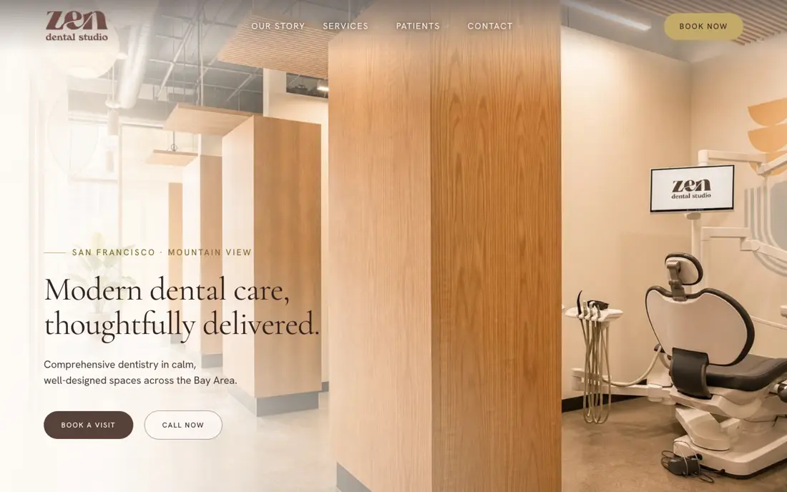
Calma premium · Zen Dental Studio (SF)
Madeira, serifa, 2 botões: "cuidado moderno, entregue com calma"
- Referência pro bloco de adultos: os pais também são pacientes e esse tom fala com eles.
- Pra LCR: o card de Adultos pode ter esse registro mais sóbrio, diferente do infantil.
zen.dentist 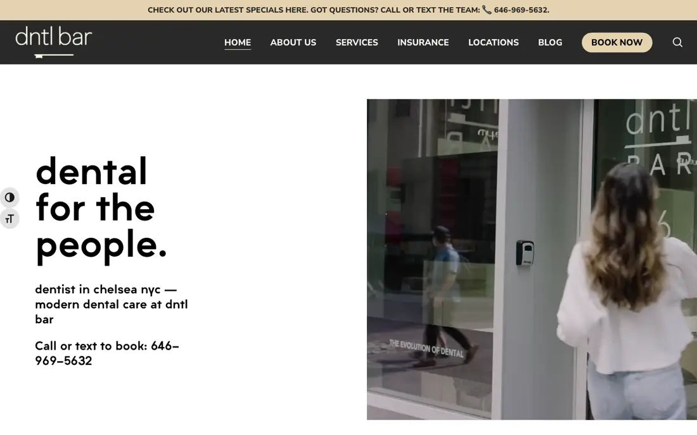
Tipografia gigante · dntl bar (NYC)
"dental for the people." em 120px + vídeo da porta
- Três palavras enormes, minúsculas, e um vídeo real da entrada. Confiança por escala.
- Pra LCR: os títulos de seção podem crescer 30–40% e perder a pílula colorida em cima.
dntlbar.com 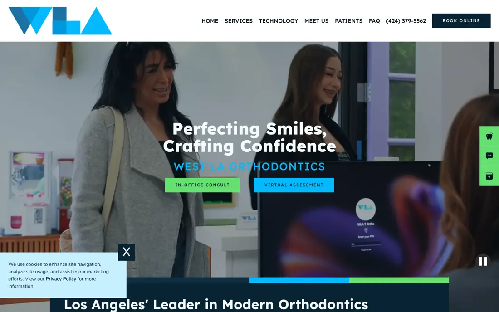
Adolescente · West LA Orthodontics (NYX 2025)
Vídeo do consultório + "Perfecting smiles, crafting confidence"
- Feito pra teen: vídeo, geometria, azul-claro e verde-limão, consulta virtual. Nada de infantil.
- Pra LCR: o bloco de Adolescentes segue esse tom: autoestima, discrição, vídeo do consultório.
westlaortho.com 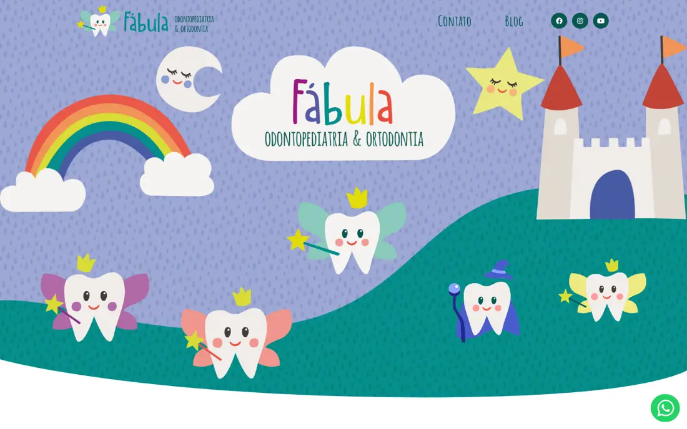
Contraexemplo · Fábula (BR)
Arco-íris, castelo, fadas-dente: fala só com a criança
- Bonito como livro infantil, mas o pai não encontra CTA, preço, equipe ou endereço na primeira tela. É o "infantil demais".
- Pra LCR: a régua do que não fazer. A criança é a estrela da clínica, mas quem lê o site é o pai.
fabulaodonto.com.br 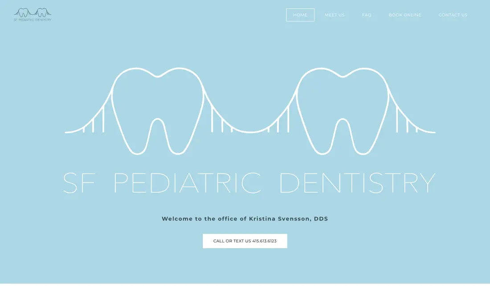
Contraexemplo · SF Pediatric Dentistry
Minimalista demais vira "site de template"
- Azul-bebê, logo de linha, botão cinza, texto corrido. Confiável, mas sem personalidade e sem prova.
- Pra LCR: o risco do lado oposto: tirar a graça toda e ficar genérico.
sfpediatricdentistry.com
3. O site da LCR hoje, seção a seção
Capturas do branch site-reestruturacao. A estrutura está certa; o problema é visual: tudo é card branco com ícone de linha e pílula verde, e o hero é escuro com foto de fachada distorcida.
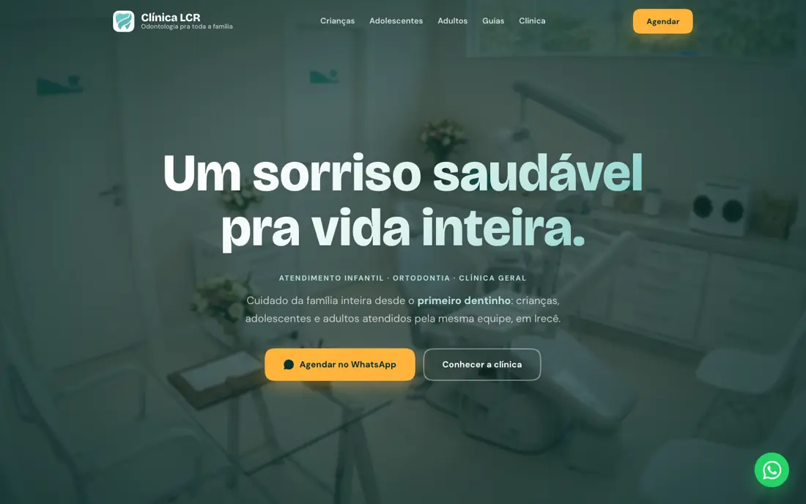
HeroVerde-noite, foto de fachada com véu, logo gigante
- Intro cinemática esconde o conteúdo e o fundo escuro fala "tecnologia", não "família".
- Proposta: hero claro (creme) com foto real grande e o dente-personagem; manter a mecânica da máscara só se virar clara e curta (decisão sua).
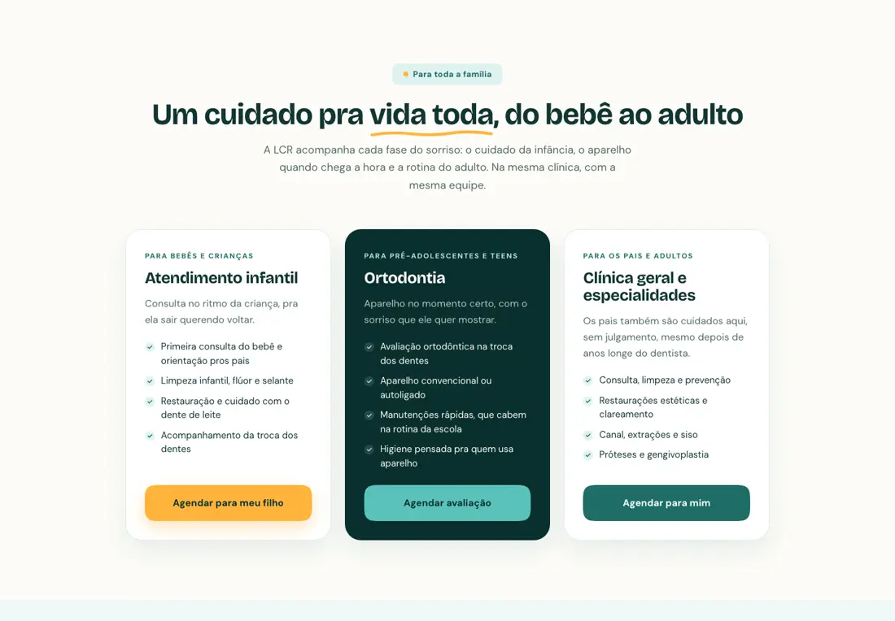
Para quem é3 cards iguais, lista com check genérico
- Proposta: 3 blocos alternados (foto/personagem de um lado, texto do outro), cada um com a cor do público.
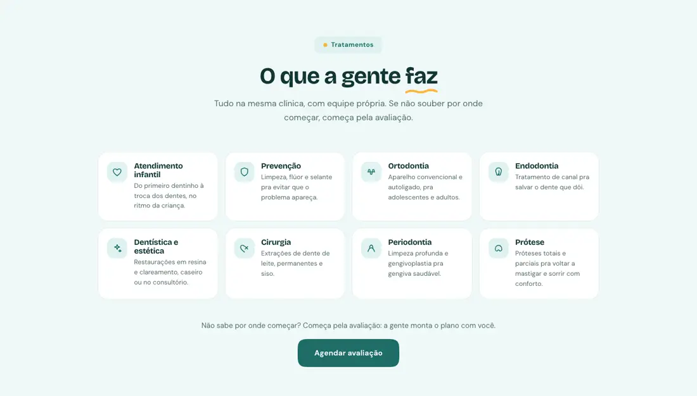
Especialidades8 caixinhas com ícone de linha
- É o bloco mais "template" do site. Proposta: 8 variações do dente-personagem, sem caixa, em linha única (como Rock).
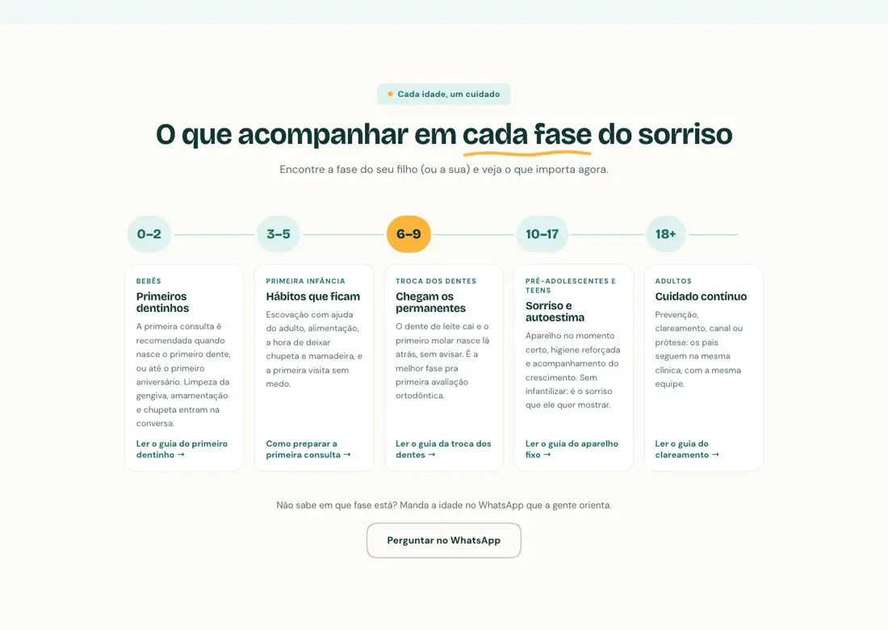
Linha do tempoPílulas de idade + cards brancos
- Proposta: faixas de cor por idade com o personagem crescendo (Persona), texto de 2 linhas, link pro guia.
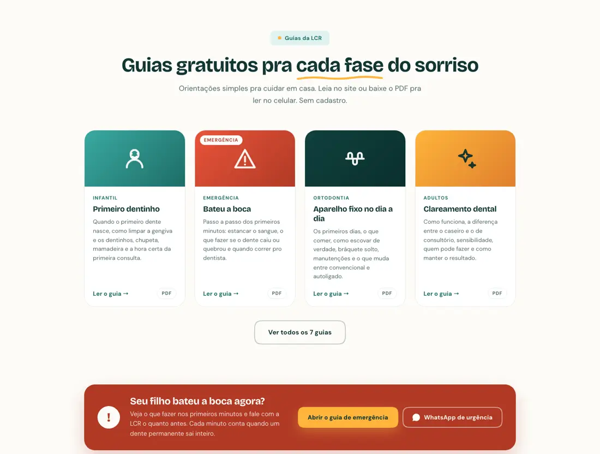
GuiasCapas em gradiente com ícone
- Proposta: capas com o personagem em situação (bebê mamando, teen com aparelho) ou foto real de detalhe da clínica.
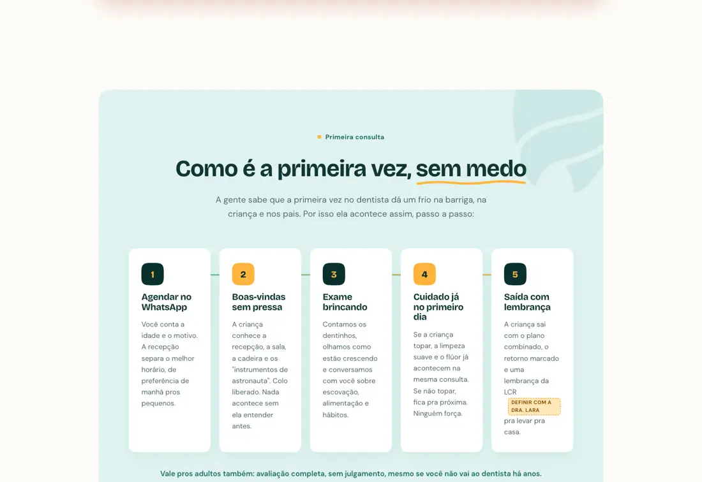
Primeira consulta5 cards em painel aqua
- Proposta: lista numerada vertical com foto real de cada momento (recepção, cadeira, espelhinho) ou personagem; CTA ao lado.
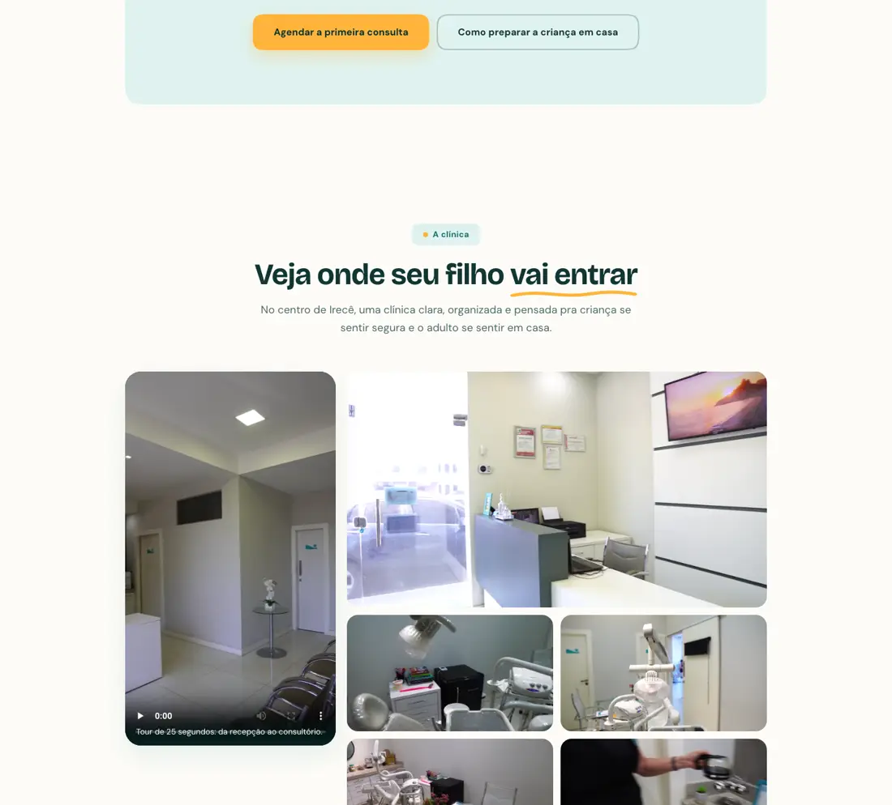
ClínicaJá é o bloco mais forte: fotos reais e tour
- Proposta: mosaico assimétrico (Happy Tooth) e uma frase da Dra. Lara sobre o espaço. Manter.
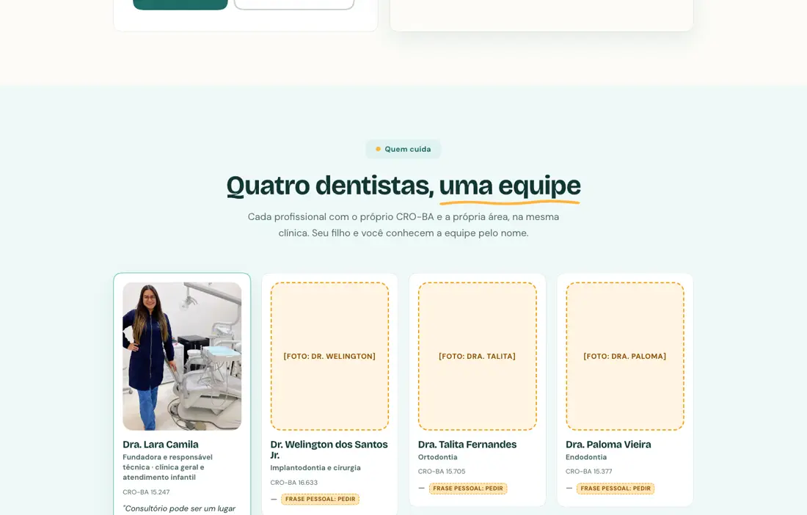
EquipeCards com retângulo de foto
- Proposta: Dra. Lara em destaque com balão de fala (Happy Tooth), os outros 3 em máscara arredondada com fundo de cor.
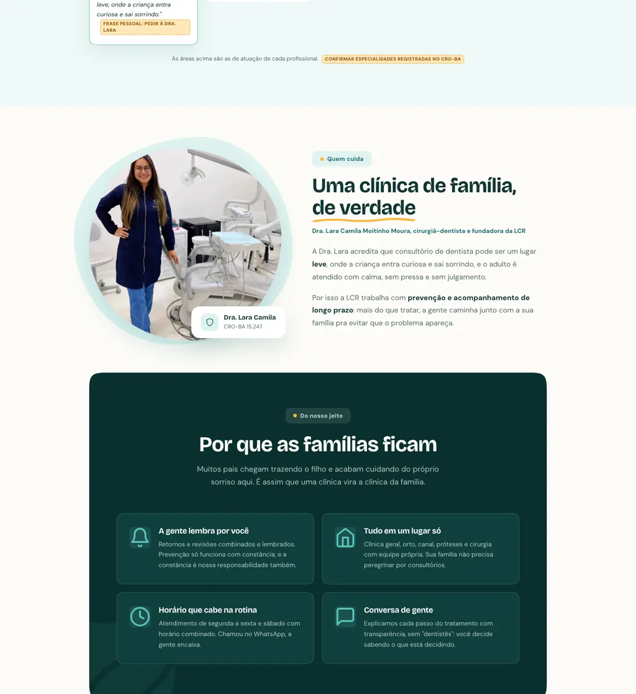
Sobre + pilaresPainel escuro com 4 cards
- Proposta: formato Gleamery: título grande à esquerda, 4 pilares em 2 linhas cada, faixa de fotos abaixo. Sem painel escuro.
4. Direção proposta
Sistema visual "Água & Sol, versão família"
A paleta atual fica. O que muda é como ela é usada: blocos de cor, personagem próprio, fotos grandes e menos componentes.
creme (base)
aqua claro
aqua logo
verde-noite
sol (CTA)
pêssego (novo, pele/afeto)
- Personagem: família de dentes derivada do logo (bebê, criança, teen com aparelho, adulto). Traço único, 2 cores + branco. Eu desenho em SVG; se preferir ilustrador, o briefing sai daqui.
- Blocos de cor: seções alternam creme, aqua claro, pêssego e verde-noite (só o CTA final). Fim dos cards brancos repetidos.
- Tipografia: Bricolage Grotesque fica, 30–40% maior nos títulos; pílulas de seção saem; eyebrow em caixa alta pequena.
- Componentes: máximo 4 tipos (bloco foto+texto, lista numerada, faixa de fotos, card de guia). Ícones de linha saem.
- Foto: hero com foto real grande; equipe com máscara arredondada; galeria em mosaico. Vídeo vertical do tour mantido.
- Movimento: só reveal suave e o personagem com micro-animação (piscar, balançar). A intro de máscara: manter só se clara e de 1,5 s, ou aposentar.
O que precisa de você
- decisão Hero: aposentar a intro cinemática ou mantê-la clara e curta?
- decisão Personagem em SVG feito por mim (rápido, no padrão Rock) ou ilustrador contratado (mais autoral)?
- material Foto da Dra. Lara no consultório, sorrindo, em pé (hero plano B). Ideal: mãe/pai com criança, com autorização assinada (hero plano A).
- material Fotos dos outros 3 dentistas no mesmo fundo e luz.
- material Nota e nº de avaliações do Google (vai pro hero).
- já tenho Fotos e tour do espaço, textos, estrutura, eventos, guias.
Ordem de implementação sugerida
- Sistema: tokens de cor por seção, tipografia maior, remoção de pílulas e ícones de linha.
- Personagens SVG (4 base + 8 variações de serviço).
- Hero novo + Para quem é + Especialidades.
- Linha do tempo em faixas + Primeira consulta em lista com foto.
- Equipe, Sobre e Depoimentos no formato novo.
- Guias: capas com personagem.
6. O site completo na direção B
A direção B aplicada na home inteira, com o mascote em 4 versões (bebê, criança, teen com aparelho, adulto de óculos), blocos de cor por seção, fotos reais da clínica e os 7 guias. Ao vivo em novo.clinicalcr.com.br. As etiquetas amarelas são o material que ainda falta (nota do Google, fotos dos dentistas, frases, estacionamento).
Desktop · home inteira
- Hero: foto real da Dra. Lara em arco, título grande, WhatsApp primário, nota do Google ao lado do botão, mascote espiando.
- Públicos: três blocos alternados, aqua / verde-noite / pêssego, cada um com foto, pílulas e CTA próprio. O adolescente ganha o bloco escuro, sem infantilizar.
- Especialidades: lista numerada em duas colunas, sem ícone genérico.
- Fases: cinco faixas de cor com o mascote crescendo, do bebê de chupeta ao adulto de óculos.
- Guias e emergência: capas com o mascote por categoria, banner vermelho de trauma.
- Primeira consulta: mascote e CTA fixos à esquerda, cinco passos numerados à direita.
- Clínica, equipe, sobre: galeria e tour reais, Dra. Lara com balão de fala, pilares em lista e faixa de fotos.
Celular · home inteira
- Barra fixa com Agendar e Como chegar.
- Lighthouse mobile 99 em performance e 100 em acessibilidade antes da direção B; refaço a medição depois do deploy.
5. Fontes da pesquisa
- Delmain, Best Pediatric Dental Websites 2026 · Studio EightyEight, 20 Best Dental Websites · Delmain, 20 Best Dental Websites 2026
- Delmain, 26 Dental Website Ideas that Convert · Patient News, High-Converting Dental Website 2026 · Whitehat SEO, dental website design
- Awwwards, Persona Kids Clinic · NYX Awards 2025, West LA Orthodontics · Line25, Web Design Trends 2026 · TinyFrog, Trends 2026
- Benchmarks citados pelas agências (conversão típica de site odontológico entre 2% e 5%; acima de 10% com página dedicada) são afirmações de fornecedores, não estudo independente.